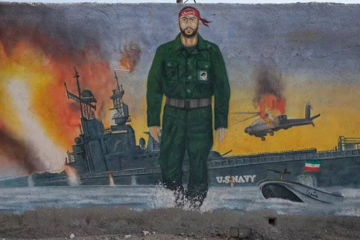

Sat, May 18, 2019
5/17/19

The United States is widely cited as the world's foremost military power, but the country has a spotty record when it comes to asymmetrical warfare. Now-infamous war games conducted nearly 17 years ago showed a maritime matchup against tactics similar to those of Iran would likely prove extremely deadly for the Navy.
A new wave of tensions between longtime foes Washington and Tehran was set off by alleged reports of Iran pursuing new missile activity in the region, just as it prepared to commemorate the U.S.' unilateral pullout from a 2015 nuclear deal by stepping back from some of its own commitments to the historic agreement. Among these alleged threats were satellite imagery purporting to show small traditional sailing vessels known as dhows being fitted with cruise missiles.
Iran's ambassador to the United Nations Majid Takht Ravanchi dismissed these assessments, telling CBS News on Friday that "we do not fire missiles out of small boats." He rejected such "fake intelligence" as deliberate attempts to set up the pretext for conflict—not unlike the false claims that led up to the 2003 invasion of Iraq.
Iran's two maritime forces—its conventional navy and the navy of the elite Revolutionary Guards—do, however, maintain a missile-equipped fleet of fast attack craft that it claims could take out even the most advanced U.S. warships although some have dismissed the capabilities of such assets. In a mixed computer and live-fire simulation in 2002, a "Red Team" armed with vessels and strategies not unlike those known to be employed by Iran once pummeled a "Blue Team" representing the U.S. to the point where the Pentagon needed to step in to ensure a friendly victory.
The U.S. was already on the path to war with Iraq in 2002, after it accused the country of possessing weapons of mass destructions and threatening regional stability through missile activity and support for militant groups. From July 24 through August 15, the since-dismantled Joint Forces Command conducted a $250 million dollar exercise known as Millennial Challenge that pitted the U.S.' Blue Team led by Army General Lieutenant General Burwell B. Bell III against a Red Team representing an oil-rich Persian Gulf nation, most associated with either Iran or Iraq, but in actuality led by retired Marine Corps Lieutenant General Paul Van Riper.
Despite being significantly outgunned by a much more technologically-advanced adversary, Van Riper launched a massive shock cruise missile salvo that overwhelmed the Blue Team' Aegis Ballistic Missile Defense System radars, sinking a significant portion of what was the equivalent to a strike carrier group. He then led a shock guerilla-like assault of fast attack craft that finished off much of what remained using missiles and suicide charges